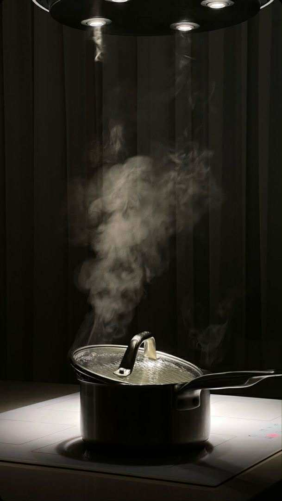

I. Harmonia kontrastów

Kompozycja smakowa oparta na współistnieniu przeciwieństw, w której łagodność spotyka się z wyrazistością, a świeżość przeplata się z głębokim aromatem. Potrawa stanowiąca przykład kontrolowanej harmonii, w której każdy element pełni rolę równoważącą inny, tworząc doświadczenie kulinarne o intensywnym, lecz jednocześnie kojącym charakterze.